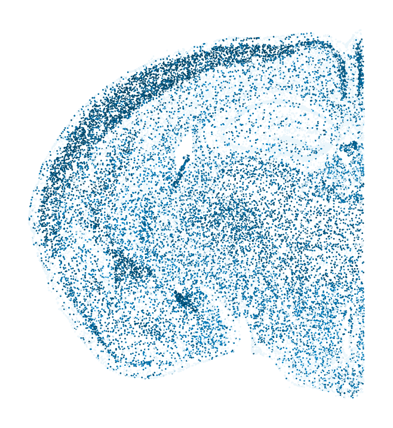
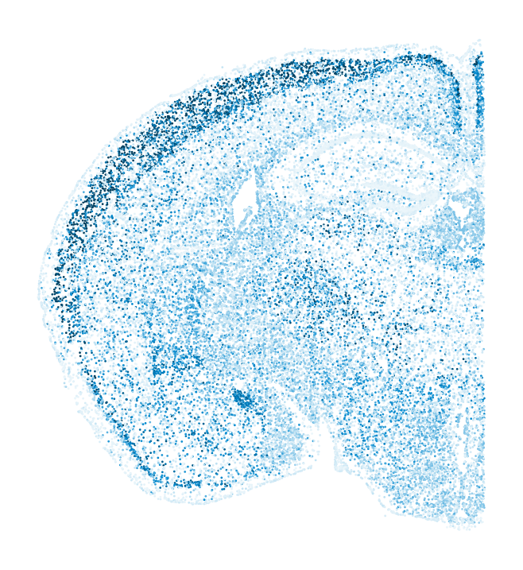

SpaGE · does it work?
Test on genes we know: hide one, predict it, compare
Data
SpaGE
Tangram
cell2location
Compare
measured genes:
{{g.name}}
One gene at a time is removed from the spatial data (dashed), predicted from the others, then compared with its real measurement.
Cux2 · measured

Cux2 · predicted by SpaGE

Same layer pattern, smoother. Spearman ρ across 37,068 cells: 0.57.
Why only 0.57? ρ compares cell by cell. Single MERFISH cells are sparse (55% have zero Cux2 counts), and SpaGE averages 50 neighbours, so values in single cells disagree. Average both over squares of about 145 µm (~29 cells) and ρ rises to 0.81: the spatial pattern is reliable.
Spearman ρ, measured vs predicted, 7 held-out genes
axis 0 to 1
Practical 5: predicted_GE_loocv_SpaGE.csv (precomputed, n_pv=30). Square averages computed here (squares with ≥ 5 cells). Maps: log-normalized, 99th-percentile clip.